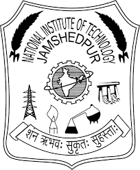

|  | NATIONAL INSTITUTE OF TECHNOLOGY |
The Department of Physics at the National Institute of Technology, Jamshedpur, was formed in 1960. Since its inception, the department has been recognized all over the country for its excellence. The department has consistently produced quality professionals in the field of physics and strived for excellence in research and development. The Department has at present 9 faculty members including DST-Inspire Faculty and 11 research scholars engaged in doctoral research. The Department actively participates in front-line research in several major areas of Physics including Solar Energy, Nuclear scattering and Supersymmetry, Mathematical Physics, Holography and holographic optical element, Speckle Meterology, Condensed Matter Physics, Plasma Physics, Computational Physics and Spectroscopy.At present department offer 2 years Master of Science (Physics) Programme as well as a Ph.D. Programme with specialization in various major areas of Physics. The Department also participates in teaching Engineering Physics to B.Tech. (Hons.) students of all the disciplines namely- Civil Engineering, Computer Science and Engineering, Electrical and Electronics Engineering, Electronics and Communication Engineering, Production and Industrial Engineering, Mechanical Engineering and Metallurgical & Materials Engineering of the Institute. Our M.Sc. students are ranking good in national level competitive exams like CSIR-NET, GATE, JEST as well as in the INSPIRE Fellow scheme offered by the Department of Science and Technology (DST), India.